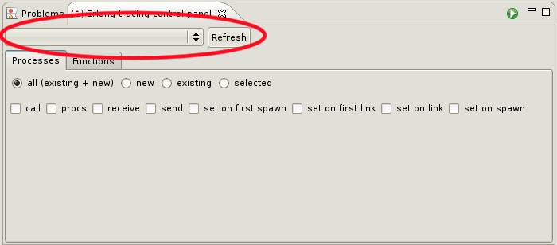
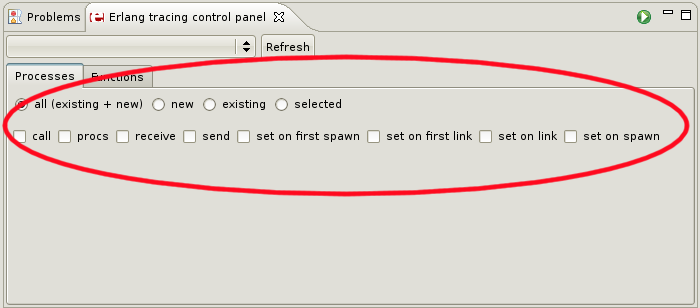
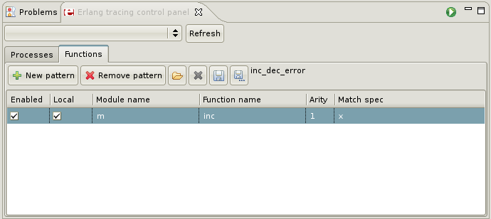
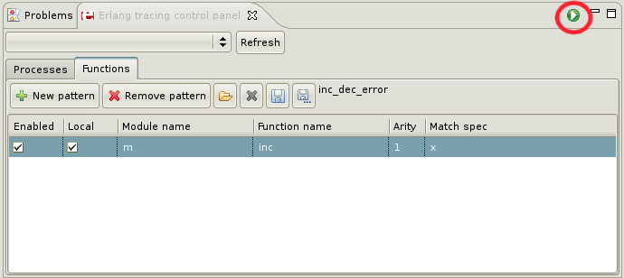
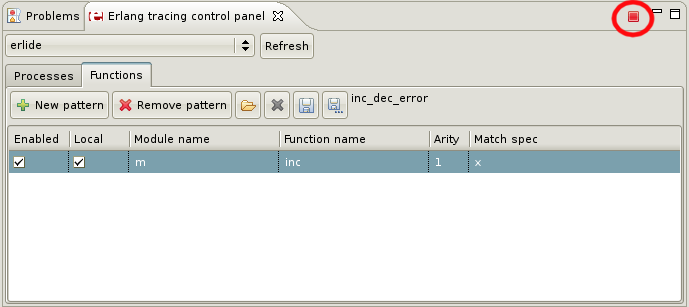
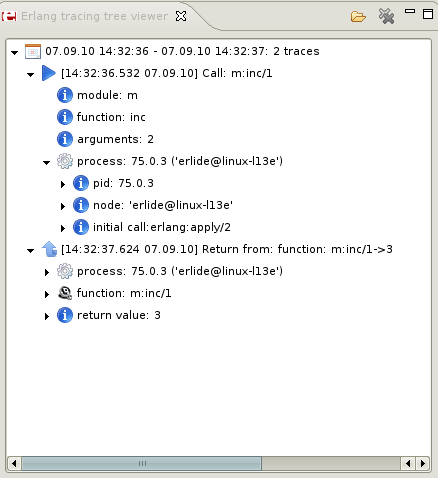

Using list box select erlang node which should be activated for tracing. This is node on which code to be traced runs. 
In "processes" tab set which process should be traced (you can leave "all") and set flags. To trace function calls set "call" flag. 
In Outline view right click on function you want to trace and choose from context menu: Tracing>Add to trace patterns

In "Functions" tab you will see your pattern:

Start tracing clicking "Start tracing" icon:



You can open in editor function's or module's definition by double clicking on it's name in tree viewer.